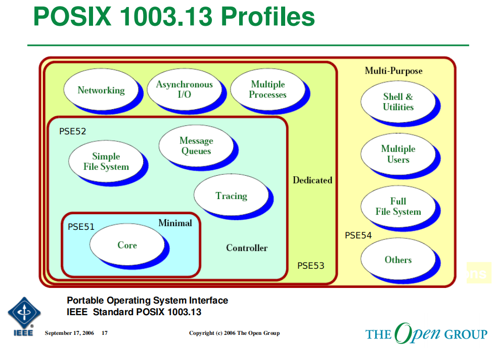
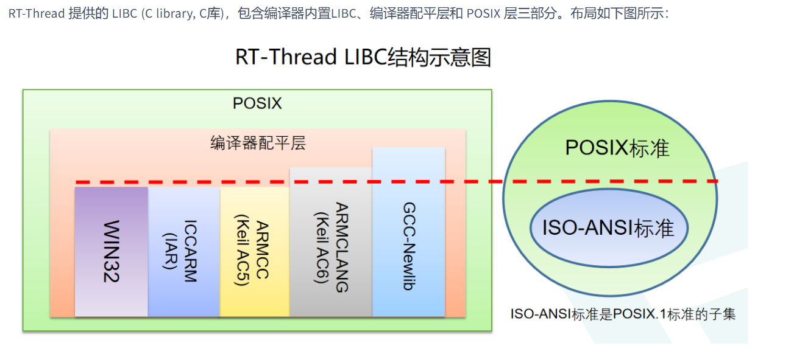
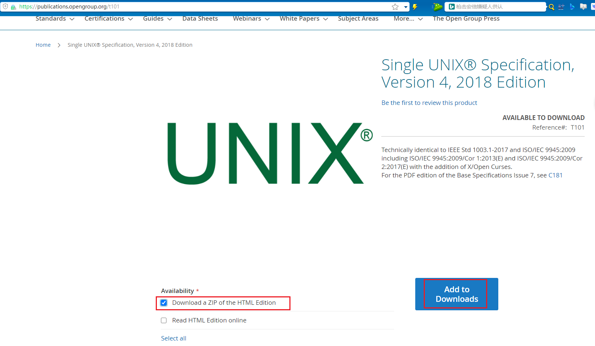
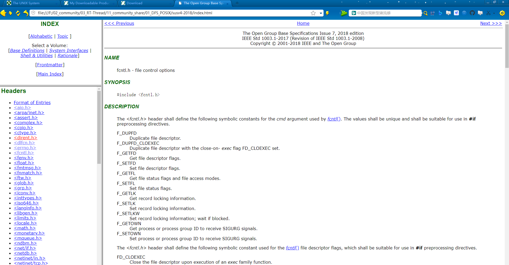
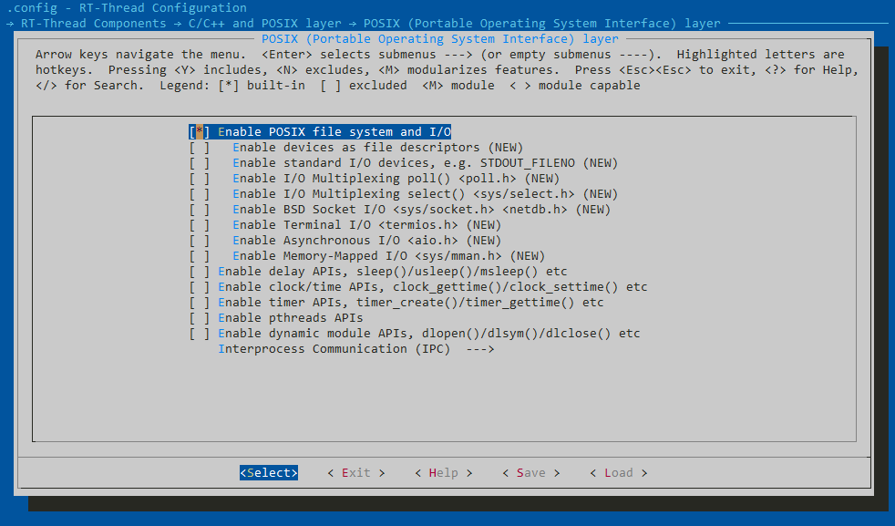
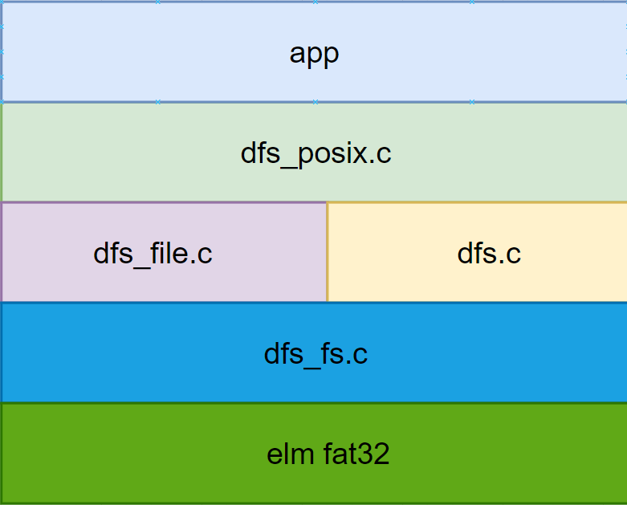

2. POSIX 介绍
2.1. 参考资料
2.2. 简介
POSIX 全称 Portable Operating System Interface ，即可移植操作系统接口，这些接口是IEEE组织定义的，这些接口，在不同的操作系统中，应当都被支持，从理论上来说，使用POSIX接口编写的应用程序，运行在不同，但是都支持POSIX标准的操作系统中，是不需要做任何修改就能运行起来的。
目前支持POSIX标准的系统有哪些呢？ 目前主流的linux系统，比如ubuntu, centos等，都支持POSIX标准API接口；
对于Windows系统，posix支持情况，可以查看链接，总得来说，windows本身的API接口是不支持posix接口的，但是通过扩展的方式，支持了posix，比如，win10中，通过开启WSL，来支持posix接口
POSIX 为了提供不同层级的RTOS能力，划定了 PSE51, PSE52, PSE53, PSE54 共四个级别；分别对应了四种操作系统。
Minimal Real-time System Profile IEEE Std 1003.13 PSE51，基础 RTOS
Real-time Controller Profile IEEE Std 1003.13 PSE52，带有简单的文件系统…等
Dedicated Real-time Profile IEEE Std 1003.13 PSE53，拥有网络功能…等
Multi-Purpose Real-time Profile IEEE Std 1003.13 PSE54，完整的文件系统，带有 Shell 组件…等


2.3. FAQ
什么是POSIX？什么是 POSIX.1？
POSIX 是 IEEE 的商标。
POSIX 是可移植操作系统接口的**首字母 **缩写。
POSIX.1是某一个具体的标准，这里指IEEE Std 1003.1-1988，这保持了符号“POSIX”的可读性优势，而不会与 POSIX 系列标准产生歧义。
POSIX.1 的最新版本是什么？
1003.1-2017标准于2018年3月发布。该标准正式名称为：
IEEE Std 1003.1-2017 The Open Group Technical Standard Base Specifications，第 7 期，2018 年版，该标准的简单介绍
我可以从哪里下载 1003.1 标准？
该标准最新版本的 html 版本（包含技术勘误 1）相关资料可从以下网址免费阅读和下载
http://www.unix.org/version4/
下载POSIX.1标准的连接：https://publications.opengroup.org/t101
自己下载的话，需要注册，登陆

2.4. 如何为OS适配POSIX接口
-

阅读每一个头文件中的描述，该头文件中，说明了，需要定义那些类型，宏，枚举，以及接口等
2.5. RT-Thread OS中POSIX支持情况

POSIX FILE 相关接口，包含了文件系统的内容，接口比较丰富；标准 I/O 接口，Poll / Select 等较复杂的功能也已经支持
Delay 相关接口
Clock 相关接口，对拥有 RTC 硬件，或者没有使用 RTC 硬件的设备都有对应的功能实现
Timer 相关接口，已经对接到 RT-Thread 的定时器接口，实现对应的函数
Pthread 相关接口，在多任务编程中使用很广泛
Dynamic 动态模块
POSIX 的 标准 IPC 接口 ：pipe ，message，semaphore 等函数
Socket接口：Enable BSD Socket I/O <sys/socket.h> <netdb.h>后就可以使用BSD Socket接口
2.6. RT-Thread中DFS介绍
框架介绍

相关资源
[文档连接-可以使用draw.io网址在线打开](./RT-Thread DFS数据结构分析.drawio)